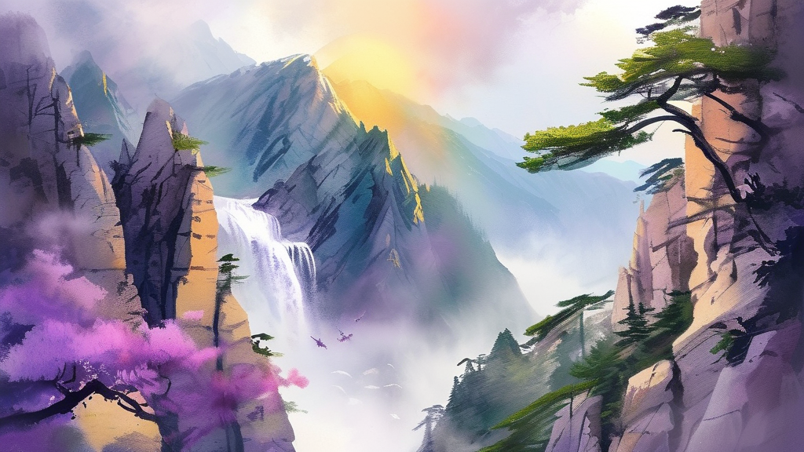
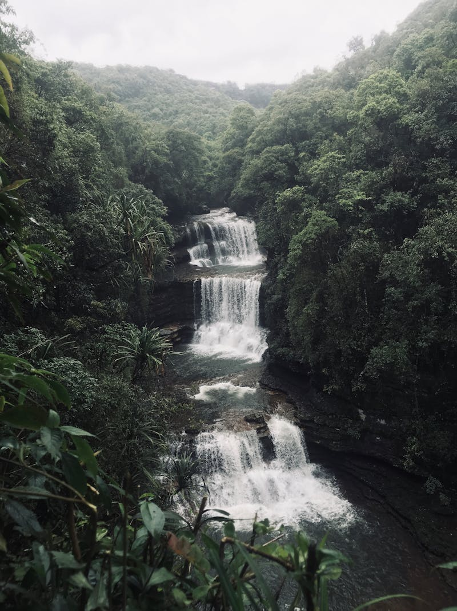

🎬 视频1：看动画了解这首诗的故事（4分钟）
🎬 视频2：认识写这首诗的大诗人李白（10分钟）
视频1：《爱上古诗》望庐山瀑布
视频2：《唐诗大电影》大摄影师李白
如果视频无法播放，点下面按钮去B站看
👆 旅行诗人李白
李白是中国最有名的大诗人，大家叫他「诗仙」🧙♂️
他特别爱到处旅游——爬山、坐船、喝酒、写诗，走了大半个中国！
有一天他来到庐山，看到一个巨大的瀑布从山顶冲下来，太壮观了，就写下了这首千古名诗 ✨
👇 这就是真实的庐山瀑布！

📸 庐山瀑布实景
🎬 看看真实的庐山瀑布有多壮观：
🎥 庐山瀑布实拍（1分钟）
🏔️ 庐山在江西省，现在还可以去看这个瀑布哦！
🚶 李白活着的时候没有飞机高铁，全靠走路和坐船。他从四川出发，一路旅行了大半个中国！
📝 他一辈子写了差不多一千首诗，是最厉害的旅行诗人！
💡 这首诗里的「夸张」手法很重要：三千尺、银河落九天——不是真的，但让你一下子就感受到瀑布有多壮观。这就是诗的魔力 ✨
翻完所有卡片才能答题哦